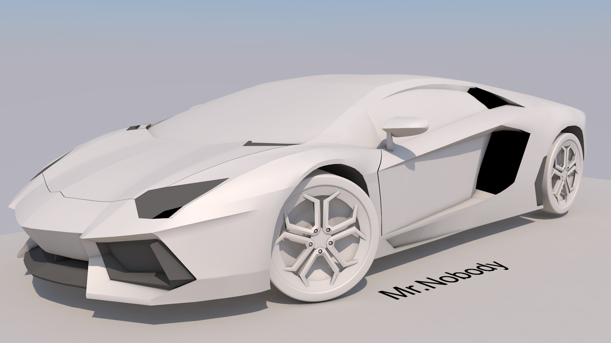
Cinema 4D
In May 2021, Wong Chee Sheng stumbed upon an amzazing 3D artist, Pwnisher a.k.a. Clinton Jones where he demonstrates how easy
it is to start the journey of 3D modelling. Feeling inspired, Wong Chee Sheng picked up Cinema 4D and followed along Pwnisher's
livestream where he learns a lot about 3D modelling as well as some tips and tricks.
To challenge himself, he decided to 3D model a Lamborghini which is his dream car and after successfully accomplishing that, he moved onto 3D modelling a house of his dream.
[GitHub link: Mr.Nobody/Lamborghini] [GitHub link: Mr.Nobody/Zen_house]
To challenge himself, he decided to 3D model a Lamborghini which is his dream car and after successfully accomplishing that, he moved onto 3D modelling a house of his dream.
[GitHub link: Mr.Nobody/Lamborghini] [GitHub link: Mr.Nobody/Zen_house]
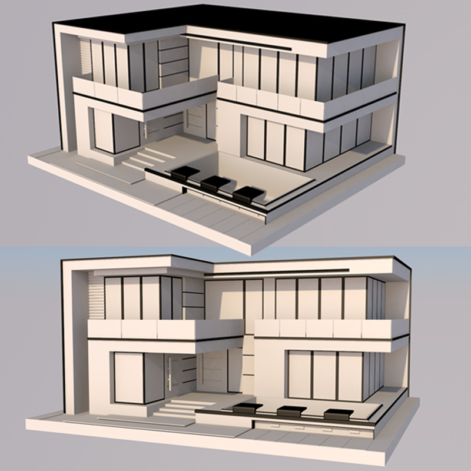
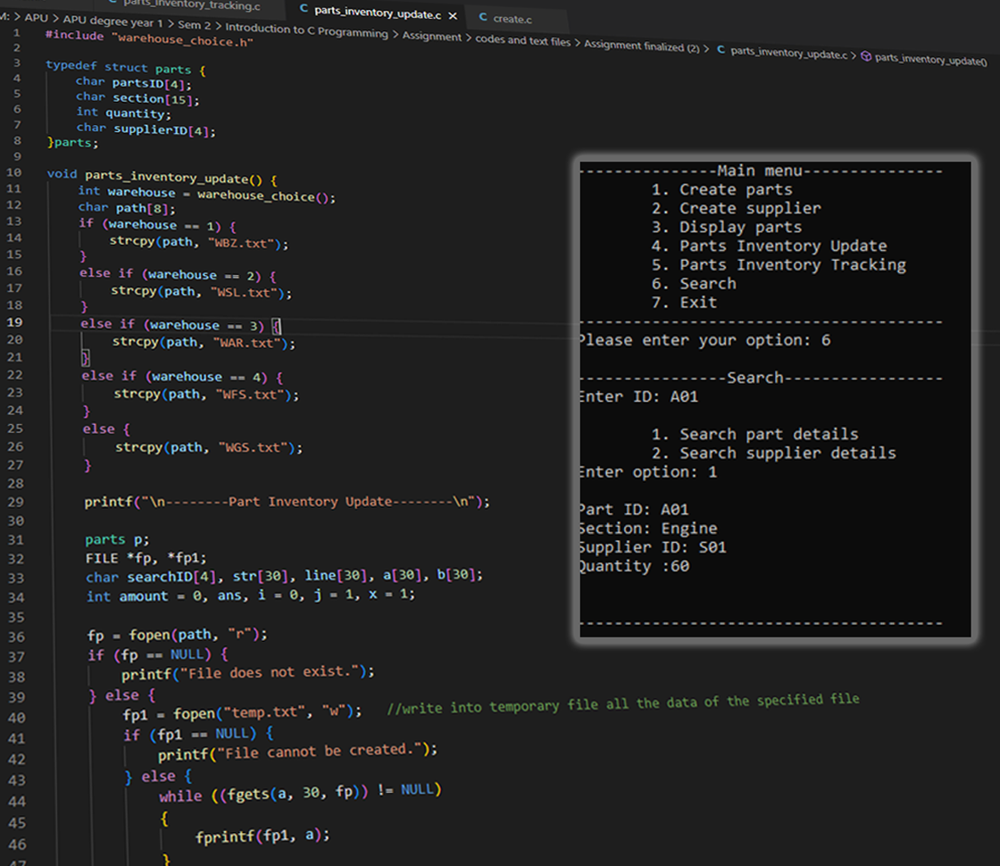
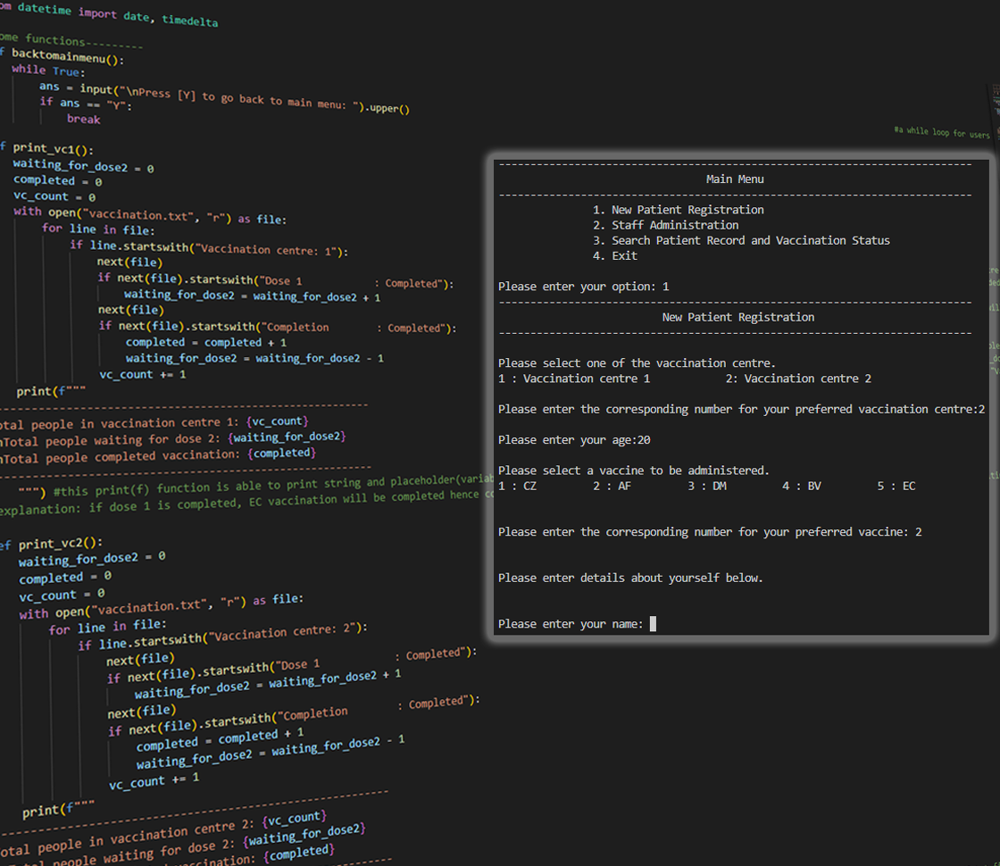
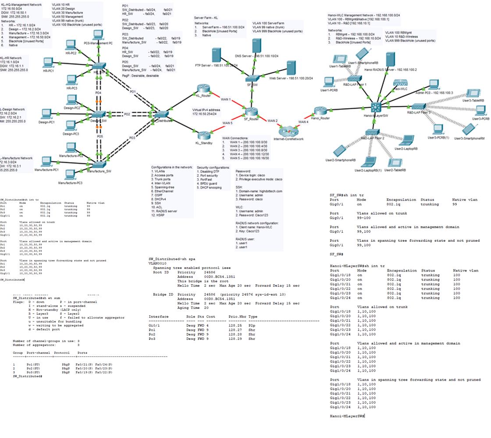
Programming languages and Cisco networking
In the year 2020, Wong Chee Sheng furthered his studies in Asia Pacific University where he was assigned different assignment that would
deem useful for the future career where he learned two programming languages namely Python and C programming. He also learned the basics
of networking using a tool called Cisco Packet Tracer.
In his C programming project, he needed to create a menu driven system that produce an output at the console for an automobile parts inventory management system. In this system, the user are able to create parts and suppliers such that the information will be stored in a file. Other function of this system includes parts display, inventory update and tracking which can be performed and updated accordingly to the input of user.
In his python programming project, he needed to create a menu driven system for storing and updating patients for the vaccination such that user can perform patient registration to store their information into a file. User could also administer their patient and the information would be updated accordingly as well as tracking the patient record and status by quering the system.
In his cisco packet tracer project, he needed to create a wireless local area network that implements access points to provide wireless connectivity as well as the implementation of network security to the infrastructure to ensure that intrusion or system failure can be reduced.
[GitHub link: Mr.Nobody/C_program] [GitHub link: Mr.Nobody/Python_program] [GitHub link: Mr.Nobody/Cisco_Packet_Tracer]
In his C programming project, he needed to create a menu driven system that produce an output at the console for an automobile parts inventory management system. In this system, the user are able to create parts and suppliers such that the information will be stored in a file. Other function of this system includes parts display, inventory update and tracking which can be performed and updated accordingly to the input of user.
In his python programming project, he needed to create a menu driven system for storing and updating patients for the vaccination such that user can perform patient registration to store their information into a file. User could also administer their patient and the information would be updated accordingly as well as tracking the patient record and status by quering the system.
In his cisco packet tracer project, he needed to create a wireless local area network that implements access points to provide wireless connectivity as well as the implementation of network security to the infrastructure to ensure that intrusion or system failure can be reduced.
[GitHub link: Mr.Nobody/C_program] [GitHub link: Mr.Nobody/Python_program] [GitHub link: Mr.Nobody/Cisco_Packet_Tracer]
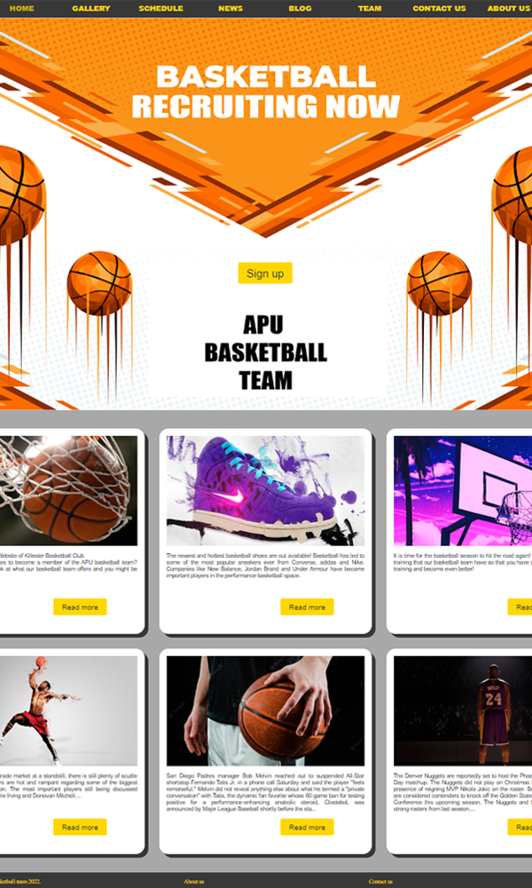
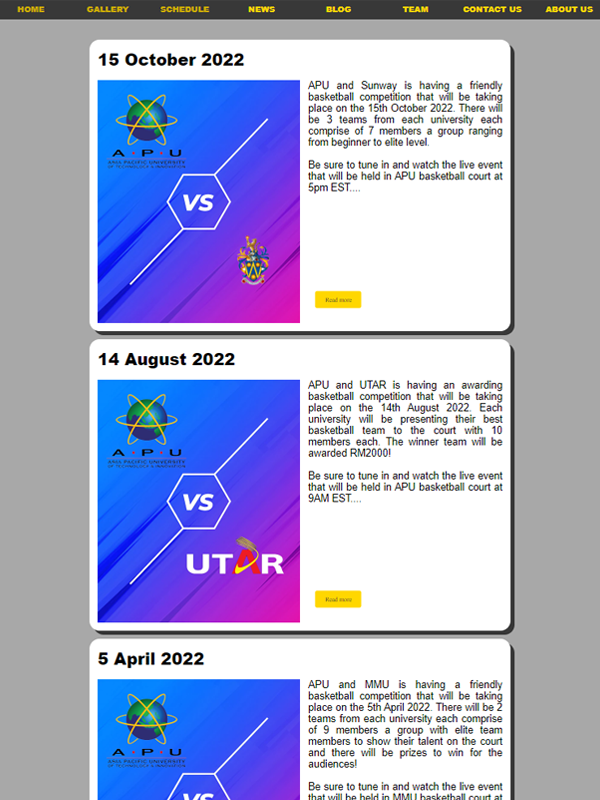
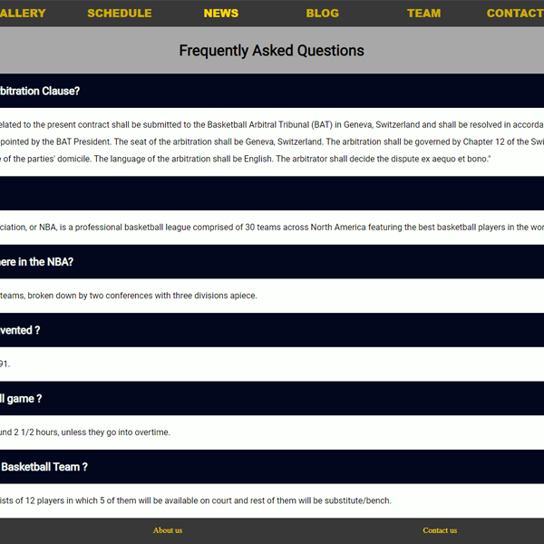
Web Design and Development
Wong Chee Sheng was also introduced to web design and developmet where he needed to create
a website for the basketball team in APU to increase the reach to students as well as
having an online presence.
On the website, visitors can view the gallery, schedule, news, blog and team page to obtain more information that is provided regarding the organization as well as in the basketball community. Visitors could also reach out to the organization via contact us page and view details in the about us page.
[GitHub link: Mr.Nobody/Web_Design]
On the website, visitors can view the gallery, schedule, news, blog and team page to obtain more information that is provided regarding the organization as well as in the basketball community. Visitors could also reach out to the organization via contact us page and view details in the about us page.
[GitHub link: Mr.Nobody/Web_Design]
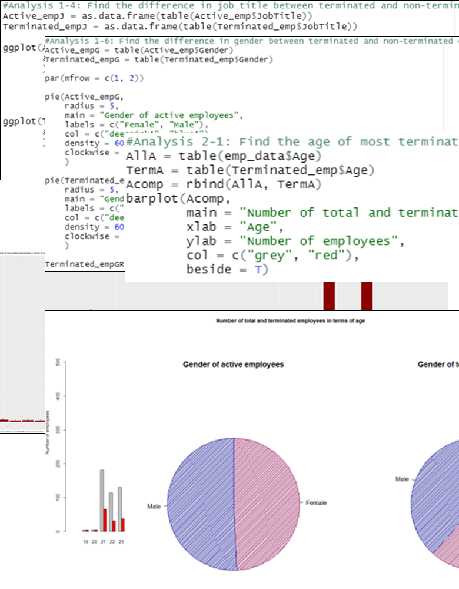
R programming
Data analysis is also another important skill that have been learned using a tool called RStudio.
In this project, he was tasked to determine the reason for high employee termination rate that
Canada is facing.
Given only the data of employee status within the company, he would need to imply some logical thinking and analytical skill to break down the fundamental cause of employee attrition.
[GitHub link: R_project]
Given only the data of employee status within the company, he would need to imply some logical thinking and analytical skill to break down the fundamental cause of employee attrition.
[GitHub link: R_project]
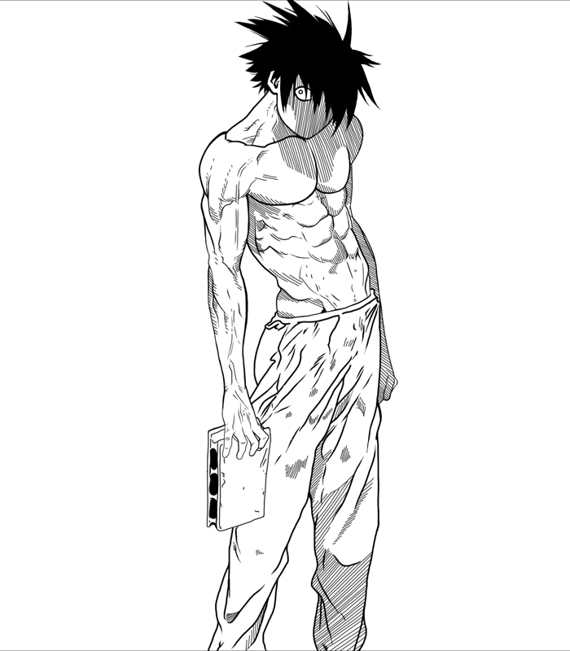
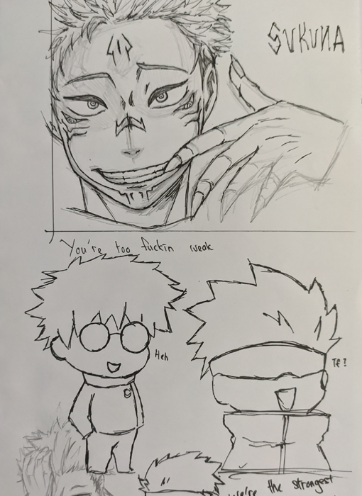
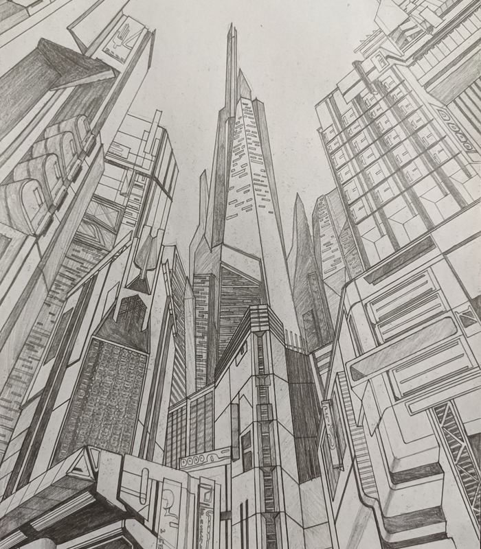
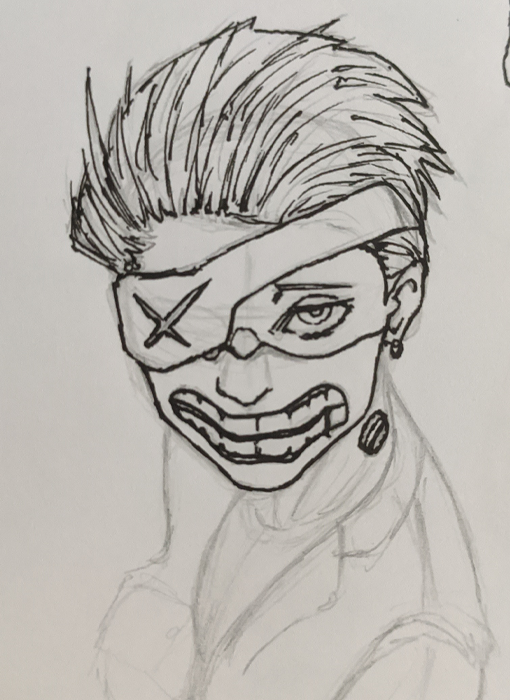
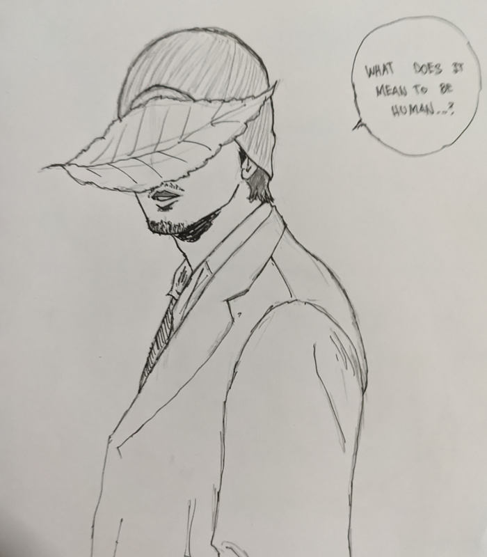
[ Artworks ]